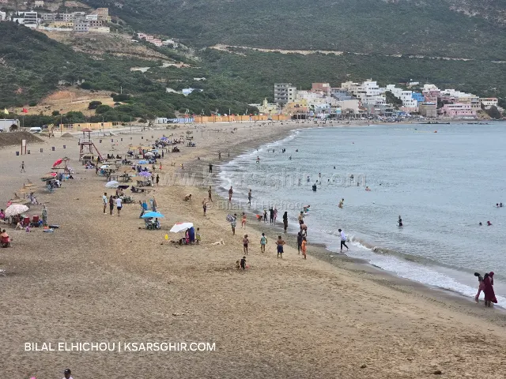
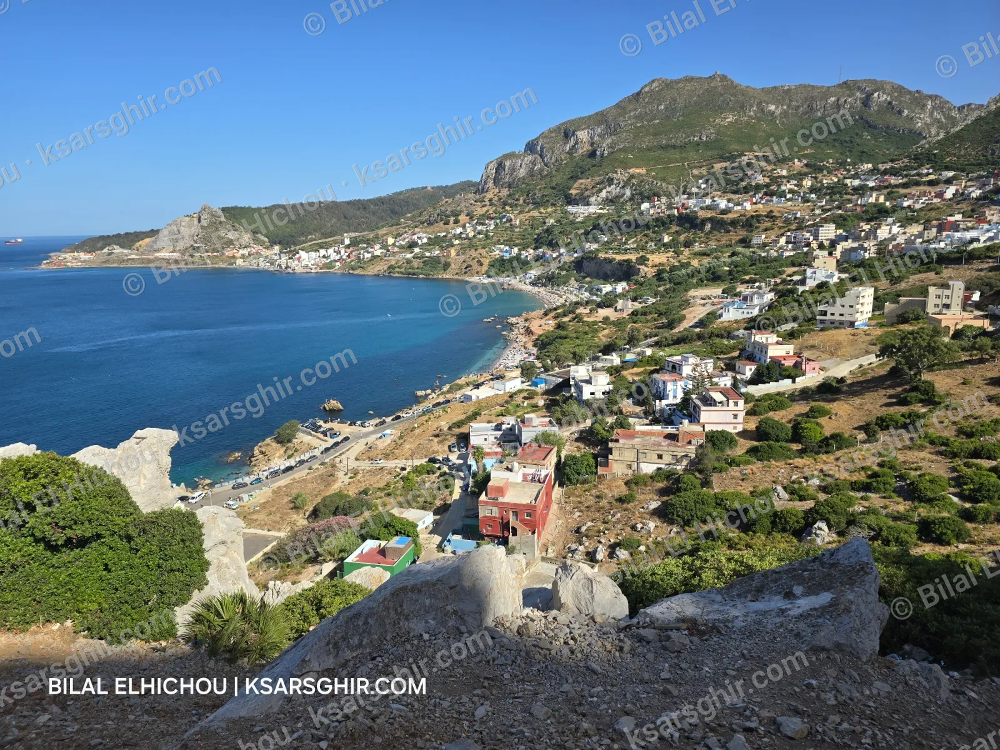

🌿 طبيعة
بليونش عند سفح جبل موسى: شاطئ رملي محروس في الصيف، مدارس للغوص، صيد بالقصبة، مسار جبل موسى مع أحد أبناء المنطقة، وطريقة الوصول من الفنيدق والقصر الصغير.

قرية صغيرة عند سفح جبل موسى على مضيق جبل طارق، يقصدها الزوار للبحر والغوص والصيد بالقصبة. الشاطئ محروس من يونيو إلى شتنبر، وعلى جنباته أكشاك موسمية، والمطاعم والمحلات في مركز القرية. تبعد 18 كم عن الفنيدق و33 كم عن القصر الصغير.
تقع بليونش على الضفة الجنوبية لمضيق جبل طارق، عند سفح جبل موسى، بين القصر الصغير والفنيدق. وهي تابعة إدارياً لـجماعة وقيادة بليونش بـعمالة المضيق الفنيدق، أي أنها خارج إقليم الفحص أنجرة الذي تتبع له القصر الصغير.
تبعد القرية 18 كم عن الفنيدق و33 كم عن القصر الصغير. المكان هادئ، والجبل ينحدر نحو البحر، فيجمع بين الشاطئ والجبل في مشهد واحد.
ارتبط جبل موسى منذ القدم بأسطورة "أعمدة هرقل"، إذ تعتبره روايات كثيرة العمود الإفريقي المقابل لصخرة جبل طارق على الضفة الأوروبية. وتنسب بعض الروايات اسمه إلى موسى بن نصير، والي إفريقية في العهد الأموي. كما ترتبط المنطقة بتاريخ العبور نحو الأندلس سنة 711، حين عبر طارق بن زياد المضيق من الضفة الإفريقية نحو الجبل الذي حمل اسمه بعد ذلك.
الشاطئ الرئيسي رملي، وبجانبه شواطئ صغيرة فيها حصى وأحجار. الحراسة متوفرة من يونيو إلى شتنبر كباقي شواطئ المنطقة.
على جنبات الشاطئ أكشاك موسمية في الصيف، والمطاعم والمحلات في مركز القرية القريب. ويُستحسن أن تحمل معك مظلة.
بحكم موقعها في المضيق، تكون التيارات في بليونش أنشط من شاطئ القصر الصغير، فاسبح قرب الشاطئ وداخل المنطقة المحروسة. وكباقي شواطئ المنطقة، تكبر الأمواج مع الغربي، والسباحة غير منصوح بها في الشتاء. قبل الخروج اطلع على البحر اليوم.
الغوص هو أبرز ما تشتهر به بليونش. توجد في المنطقة مدارس للغوص، ويكثر النشاط خاصة في فصل الصيف حين يكون البحر أهدأ. إذا كانت هذه أول تجربة لك، فالأفضل أن تمر عبر إحدى هذه المدارس بدل الغوص وحدك، فهي تعرف الأماكن المناسبة حسب حالة البحر.
بليونش مكان معروف لدى عشاق الصيد بالقصبة، خاصة في الأماكن الصخرية حول الشاطئ. اختر يوماً هادئاً، وابتعد عن الصخور المبللة في أيام الموج.
يرتفع جبل موسى حوالي 850 متراً فوق البحر، ومن أعلاه يمكن في الأيام الصافية رؤية الضفتين الإفريقية والأوروبية للمضيق. لكن المسار وعر وغير مُعلَّم بشكل واضح، لذلك:
المضيق هو أقصر طريق بين إفريقيا وأوروبا، لذلك تمر فوقه أعداد كبيرة من الطيور المهاجرة في الربيع والخريف، ومنها الطيور الجارحة. منطقة جبل موسى من الأماكن الجميلة لمتابعة هذا المشهد.
في مركز بليونش توجد المطاعم والمحلات. وللقرية ميناء صغير للصيادين، سنخصص له موضوعاً في الدليل. أما جزيرة ليلى فلا تظهر من الشاطئ، بل من نقاط أخرى في المنطقة.
على مضيق جبل طارق عند سفح جبل موسى، بين القصر الصغير والفنيدق، وتتبع عمالة المضيق الفنيدق.
نعم، توجد مدارس للغوص، والنشاط أكثر في فصل الصيف.
نعم، من يونيو إلى شتنبر.
على جنبات الشاطئ أكشاك موسمية في الصيف، والمطاعم والمحلات في مركز القرية.
من الفنيدق (18 كم) بسيارة الأجرة الكبيرة أو بالسيارة، ومن القصر الصغير (33 كم) بالسيارة.
نعم، لكن المسار وعر، فاصعد مع أحد أبناء المنطقة يعرف الطريق.